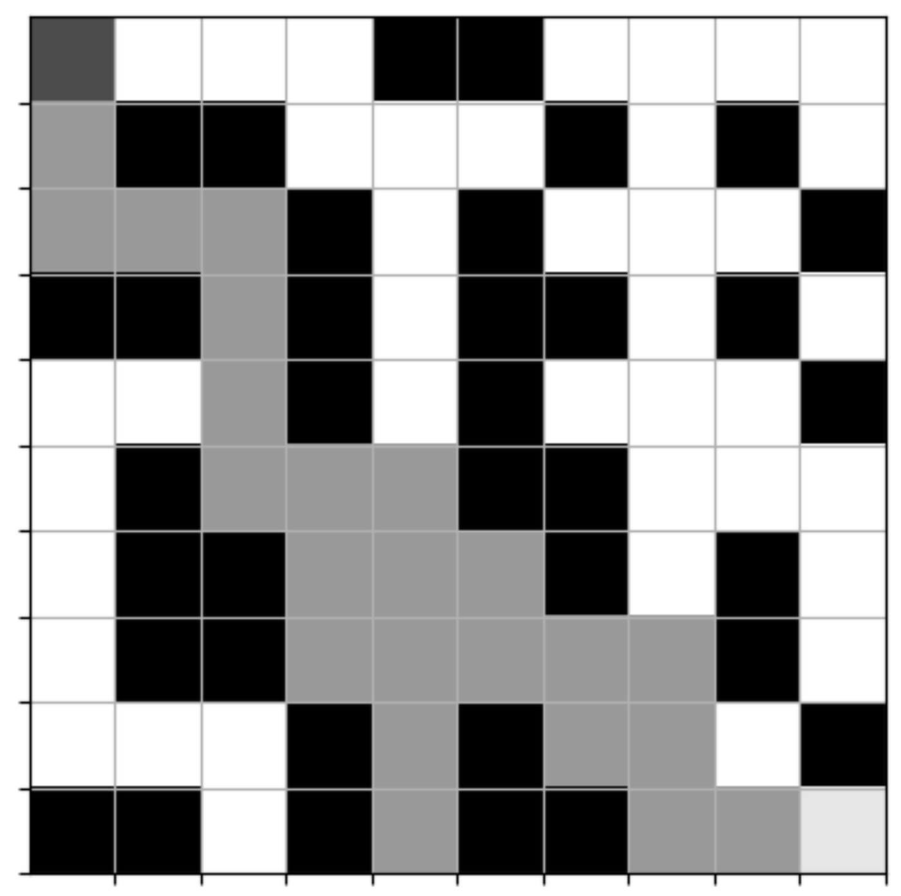

Original Artifact
The initial project was a neural network maze-solving algorithm. The original design was a 2000 epoch deep learning machine that would eventually solve a 5x5 maze array.
The most pressing concern of this design was that my hardware simply did not have the memory capabilities required to run 2000 epochs with potentially thousands of steps in between them. This one was interesting to solve. I originally tried to portion virtual ram and limit the memory that the algorithm would consume, but quickly understood that this learning process was just too exhaustive for my hardware. It needed a total overhaul.
Base Code Review
Enhancement Implemented
Breadth-First Search Algorithm
The featured enhancement of this artifact is a breadth-first search algorithm:
def seed_with_bfs(exp_replay, maze_env, path):
for i in range(len(path) - 1):
cur = path[i]
nxt = path[i+1]
# Convert to state/action/next_state
maze_env.reset(cur)
state = maze_env.observe()
# Determine action index
r1, c1 = cur
r2, c2 = nxt
if r2 == r1 - 1: action = 1 # UP
elif r2 == r1 + 1: action = 3 # DOWN
elif c2 == c1 - 1: action = 0 # LEFT
elif c2 == c1 + 1: action = 2 # RIGHT
next_state, reward, status = maze_env.act(action)
# Force high reward for expert path
reward = 1.0 if i == len(path)-2 else 0.3
if i == len(path)-2:
status = 'win'
exp_replay.remember([state, action, reward, next_state, status])
This function seeds each agent with an exploited pathway from origin to goal state. The algorithm now learns with a solution critic. This feeds into:
Seeded Maze-Solving Algorithm
def ratRace(model, maze_array, n_epoch=150, max_memory=500, data_size=32):
epsilon = 0.6
min_epsilon = 0.05
decay_rate = 0.98
max_steps = 250
maze_env = RatMaze(maze_array)
maze_env.goal = (maze_array.shape[0]-1, maze_array.shape[1]-1) # Explicit goal
exp_replay = Experience(model, max_memory=max_memory)
win_history = []
best_path = []
best_reward = -999
start_time = datetime.datetime.now()
# Breadth-First Search
start = (0, 0)
goal = (maze_array.shape[0]-1, maze_array.shape[1]-1)
shortest_path = bfs_shortest_path(maze_array, start=start, goal=goal)
if shortest_path is None:
raise ValueError("No path found in maze!")
seed_with_bfs(exp_replay, maze_env, shortest_path)
# Train Loop
csv_path = "ratRacing_log.csv"
with open(csv_path, "w", newline="") as f:
writer = csv.writer(f)
writer.writerow(["epoch", "avg_loss", "win_rate", "epsilon"])
for epoch in range(n_epoch):
maze_env.reset((0, 0))
envstate = maze_env.observe()
step_count = 0
losses = []
episode = [None, None, None, None, 'lose']
# Track reward + path for this episode
episode_reward = 0
path_this_episode = []
while maze_env.game_status() == 'not_over' and step_count < max_steps:
# Epsilon-greedy
if np.random.rand() < epsilon:
action = random.choice(maze_env.valid_actions())
else:
action = np.argmax(exp_replay.predict(envstate))
prev_r, prev_c, _ = maze_env.state
next_state, reward, status = maze_env.act(action)
# Reward shaping
goal_r, goal_c = maze_env.goal
dist_before = abs(prev_r - goal_r) + abs(prev_c - goal_c)
next_r, next_c, _ = maze_env.state
dist_after = abs(next_r - goal_r) + abs(next_c - goal_c)
if dist_after < dist_before:
reward += 0.3
reward -= 0.02 # step penalty
if status == 'win':
reward += 1.0 # big reward on win
# Track cumulative reward + path
episode_reward += reward
path_this_episode.append((next_r, next_c))
episode = [envstate, action, reward, next_state, status]
exp_replay.remember(episode)
envstate = next_state
step_count += 1
# Track win/lose
win_history.append(1 if episode[4] == 'win' else 0)
# Save best path ONLY if this episode was a win and better than previous best
if episode[4] == 'win' and episode_reward > best_reward:
best_reward = episode_reward
best_path = path_this_episode.copy()
# Train from memory
if len(exp_replay.memory) >= data_size:
input_data, targets = exp_replay.get_data(data_size=data_size)
model.fit(input_data, targets, epochs=1, batch_size=32, verbose=0)
loss = model.evaluate(input_data, targets, verbose=0)
losses.append(loss)
# Epsilon decay
epsilon = max(min_epsilon, epsilon * decay_rate)
avg_loss = np.mean(losses) if losses else 0
win_rate = sum(win_history) / len(win_history)
print(f"[Epoch {epoch}] Loss={avg_loss:.4f} | WinRate={win_rate:.3f} | Eps={epsilon:.3f}")
# Log
with open(csv_path, "a", newline="") as f:
writer = csv.writer(f)
writer.writerow([epoch, avg_loss, win_rate, epsilon])
# Early stop on solve
if win_rate > 0.9 and epoch > 20:
print("Solved — terminating training.")
break
# Plot path (or fallback to shortest path)
plot_final_path(maze_array, best_path if best_path else shortest_path)
print(f"Solved in {(datetime.datetime.now()-start_time).total_seconds():.1f}s")
return csv_path, best_path if best_path else shortest_path
The seeded algorithm now solves the previous 5x5 maze array in 21 epochs, cutting down from the previous 2000 epoch learning algorithm. This particular enhancement now features a 10x10 maze array solvwed in 150 epochs, just to further display the improvements of this solution.
Enhancement Demonstration
Artifact Narrative
Robert Tryon's Dull Learning Algorithm
After sleepless nights and gigs of vram, I decided to turn to the history of the puzzle I was trying to solve, the maze. The first instance I ran into was Robert Tryon, the inventor of the now famous rat and cheese maze experiment. In very 1930s fashion, he attempted to settle a debate of genetic predisposition to intelligence using generations of selectively bred rats. He would grant the rats that reached the cheese the moniker of 'bright', and the ones that didn't as 'dull'. He would breed each rat with another of the same moniker, each generation building upon the last until 7 generations later he had created a species of rat that could solve the maze in the shortest route possible. Sound familiar? The man was essentially creating a genetic backpropogation to solve the maze. What struck me were not the incredibly outdated eugenic remarks about the results, but rather that in all of his experimentation, not once did Tryon try to improve the success rate of the rats on an individual level. I did not have the memory for generations of rats to build a backpropagation through wall to wall impacts, so I needed to curate the experience of each one.
Theseus's Labyrinth and Ariadne's Thread
The most famous maze in human history and mythology is inarguably the Labyrinth. After the tyrant King of Crete insulted the great and petty god Poseidon by withholding a sacrificial bull, the god responded in kind by cursing the queen to give birth to the Minotaur. This beast was not to roam free, and the queen would not stand for her son to be slain, so King Minos had his personal enslaved inventor, Daedalus, create a structure so abstract, that no soul would ever escape. The Minotaur was imprisoned in this Labyrinth, and many a soul were fed to it. My point here is that this was literally a metaphor for an unsolvable puzzle. So how would one solve it?
Along came Theseus, a son of Athens, to conquer the maze and slay the Minotaur. The mythology of Theseus very specifically painted him as a simple minded man, which fits very much into the rat theme, so the question still stands, how would this dull man solve my Labyrinth?
Along comes Ariadne, princess of Crete. She was a quick-witted girl, although that does not account for taste. She falls for the Athenian prince upon meeting him, and not being one to stand by, she derives a plan for Theseus. Now Ariadne had seen the work of Daedalus, and knew the nature of his maze. A maze does not shift, it does not change. To solve it would be to create a static reference to the origin of Theseus's journey within the Labyrinth.
In the night, she descends upon him, gifting him a sword to slay the Minotaur, and to conquer the Labyrinth, simple red thread. She instructed him to unravel the thread as he explores the maze, so he would always have a path back to freedom. It works exactly as designed, and Theseus does indeed slay the beast and conquer the maze.
Breadth-First Search Algorithm
My thread was a breadth-first search algorithm. This algorithm works by starting at the origin, and pathing in each direction, determining what array cell was free and what cell was blocked. Each cell that was reached (i.e. each free cell) would repeat the process until eventually this path reaches the goal. After trimming the fat off of the path, you get the shortest route from entrance to the cheese. I feed this path to my dull rat, and the algorithm can learn the maze while always having a reference to it's own origin, never getting lost. Each generation now is seeded with the exploited knowledge of the shortest route to the goal state.
My new rats floored me. They had successfully solved the maze, and not only that, but they had done so in 21 epochs. I of course intensified my experimentation, and the final artifact features an algorithm that solves a 10x10 maze in less than 150 epochs.